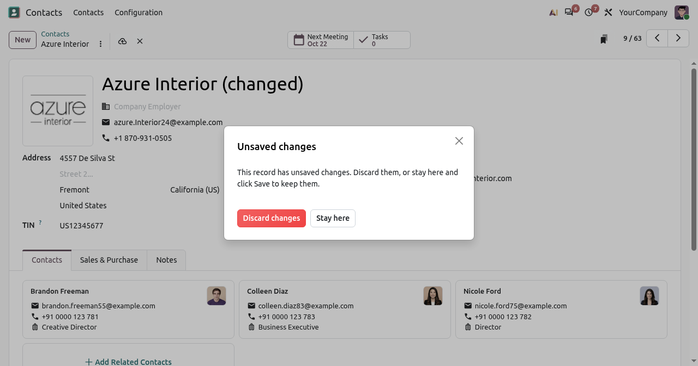
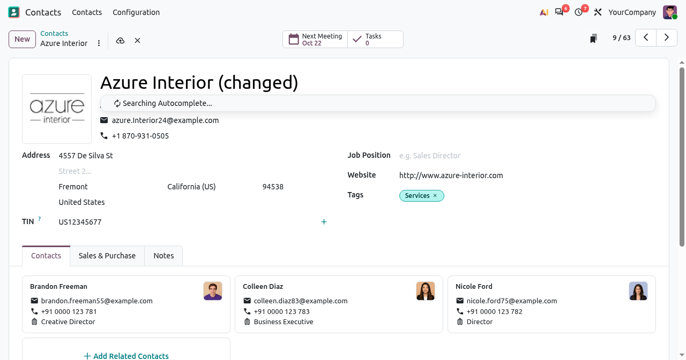
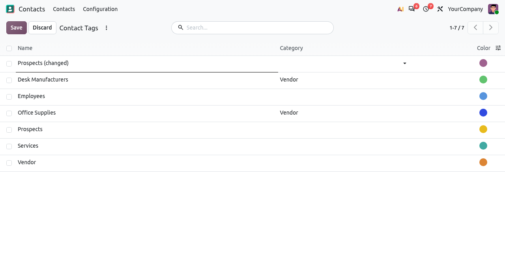
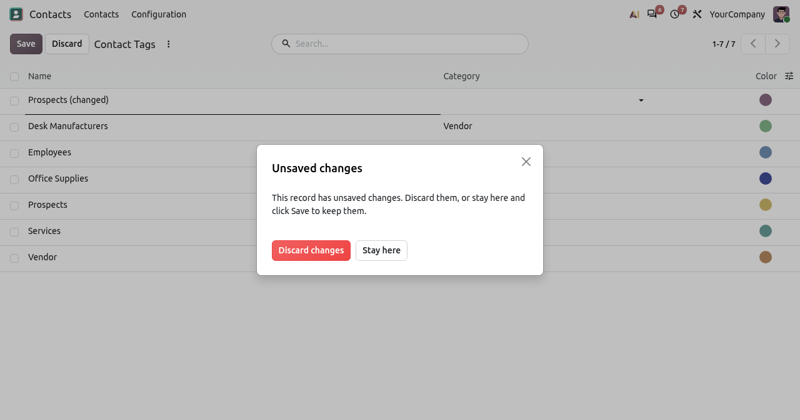

A wrong value typed by mistake, a click on the menu, a reload of the page... and Odoo has already saved the record. This app gives the control back to the user: the changes are kept only when the user clicks Save, otherwise the user is asked to discard them or to stay on the record.
The record is not saved: the cloud icon shows the changes are pending until the user clicks Save.

A click on the breadcrumb (or the menu, a link, the back button) opens the Unsaved changes dialog: Discard changes or Stay here.
The pager arrows and the New button ask the same question instead of saving the current record.
Clicking outside of a changed row no longer saves it: the row stays in edition until the user clicks Save or Discard.

Opening another menu while a row is changed asks to discard the row or to stay on the list.

Reloading or closing the tab shows the browser's own "Leave site?" warning, and nothing is saved if the user leaves. Switching to another browser tab keeps the changes on screen without saving them.
Put the web_disable_autosave folder in your addons path.
Update the apps list and install Disable Auto Save.
No settings: every form and editable list now saves only with the Save button.
Developed by Hamid A Mohamed. Questions, bugs or new ideas are welcome: contact me on LinkedIn.